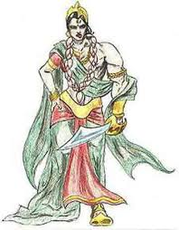
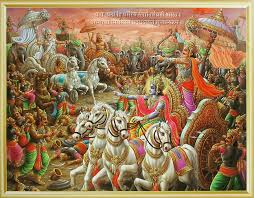

Past life of Shikhandi

In the Hindu Epic Mahabarata there is the story of Shikhandi being Amba in his previous birth.
Shikhandi had been born in a previous lifetime as a woman named Amba. Amba was the eldest daughter of the King of Kashi. Along with her sisters Ambika and Ambalika, she was taken from their Swayamvara by force by Bheeshma, as punishment to the Kingdom of Kashi for not inviting Hastinapur king to the event and to not follow the tradition(as we have seen in the last web page). After defeating several kings, including Shalva, the King of Saubala, Bhishma absconded with the princesses and presented them for marriage to Vichitravirya, the crown prince of Hastinapur.
Vichitravirya married only two sisters, because Amba told Bhishma that she had fallen in love with the king of Shalva, and was not ready to marry anyone else. Hearing this from her, Bheeshma sent Amba with grandeur to Saubala. But Shalva rejected her as well, in shame of losing the combat against Bheeshma. Amba then returned to Bheeshma and demanded that he marry her according to Kshatriya dharma, but Bheeshma declined due to his vow of celibacy. Enraged at her humiliation, she tried to persuade other kings to wage a war with Bheeshma and compel him to wed her. None agreed for they were afraid of incurring the wrath of the great warrior. Amba went to Parshurama, Bheeshma's guru, to champion her cause. However, not even Parashurama could defeat Bhishma.
she resorted to penance and received a garland of blue lotuses from Lord Kartikeya and it was foretold that anyone wearing the garland would become the cause of Bheeshma's death. She went to the Panchal, as they were a mighty empire known for its military powers. However, no one was willing to champion her cause, fearful of fight with Bheeshma. Amba, in anger, hung the garland on the gates of King Drupada and left in agony(fire).
Amba did severe penance(kathor tap) to Lord Shiva for a boon to cause Bheeshma's death. Eventually, her prayers were answered. But, being a woman with no military training, she asked Shiva how she would accomplish her task, and he responded that her future birth would be the one to actually bring about Bhishma's death. Eager to bring this about, Amba killed herself. Amba was reborn as Shikhandini, the daughter of King Drupada.
Shikhandi's gender was female turned in male
the battle of Mahabharata

In the battle of Kurukshetra, Bheeshma recognised him as Amba reborn, and not wanting to fight a "woman"(or the other version of it), avoided battling Shikhandi. On the tenth day, many warriors of Kaurava Army attacked and wounded Shikhandi and some stopped the Pandavas. Drona stopped Arjuna, Duryodhana stopped Bhima, Shalya stopped Yudhishthira, Vrikaasur stopped Nakula and Uluka stopped Sahadeva. Firstly, Ashwatthama attacked Shikhandi but Drupada took him, then Dushassana attacked Shikhandi but Dhrishtadyumna took him and at last Shakuni attacked and Stabbed Shikhandi but Virata stopped him. Later, wounded Shikhandi rides in Arjuna's chariot, and together, they face Bhishma.Knowing that this would happen, Arjuna hid behind Shikhandi and attacked Bheeshma with a devastating volley of arrows. Thus, Shikhandi was instrumental in Bheeshma's death. Death of Shikhandini:
Story Reference 1: Somewhere it shows that Shikhandi was killed by Shakuni, Dusshasana, & Ashwatthama on 10th day, by trapping created by Shakhuni to save Bheeshma, where he was brutally & severely injured by them, but he was alive for some time & finally bled to death after defeating Bheeshma, because he was seen never in battlefield after 10th day, but somewhere explained that he was seen only on the 10th day.
Story Reference 2: Shikhandi was finally killed by Ashwatthama on the 18th day of battle, killed dazed and confused, Shikhandi is killed in a sword fight with Ashwatthama when Ashwatthama, Kripacharya, and Kritaverma attacked the Pandava camp on the night of the final day of battle. In some versions of the Mahabharat, Ashwatthama kills Shikhandi's lover (male or female) in front of him; in other versions, it is Shikhandini's partner (male/female) who is butchered.